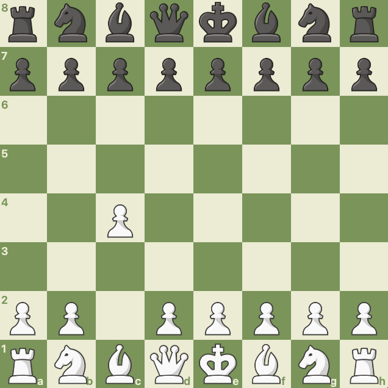

One of my favorite chess openings in the English Opening. Instead of pushing a center pawn, such as e4 or d4, White pushes a flank pawn (c4) to indirectly control the center of the board. My main goal when playing the English is to place my light-square bishop onto the g2 square to control the long a8-h1 diagonal and ultimately apply pressure to Black's h1 rook.